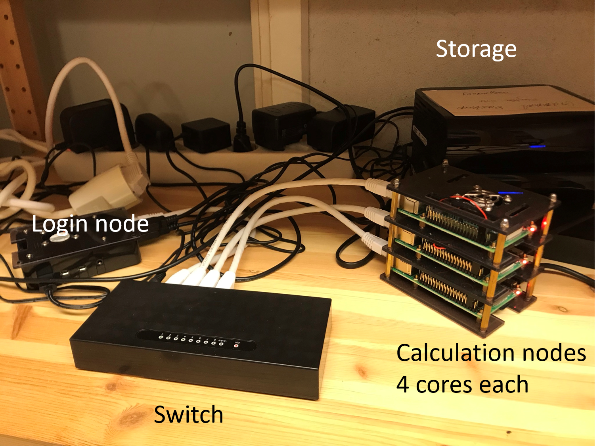

High Performance Computing — HPC
A recap
What is a cluster?
A network of computers, each computer working as a node.
From small scale RaspberryPi cluster

To supercomputers like Rackham.
Each node contains several processor cores and RAM and a local disk called scratch.

The user logs in to login nodes via Internet through ssh or Thinlinc.
Here the file management and lighter data analysis can be performed.


The calculation nodes has to be used for intense computing.
“Normal” softwares use one core.
Parallelized software can utilize several cores or even several nodes. Keywords signalizing this are e.g.:
“multi-threaded”, “MPI”, “distributed memory”, “openMP”, “shared memory”.
To let your software run on the calculation nodes
start an “interactive session” or
“submit a batch job”.
More about this in today’s introduction to jobs.
Storage basics
All nodes can access:
Your home directory on Domus or Castor
Your project directories on Crex or Castor
Its own local scratch disk (2-3 TB)
If you’re reading/writing a file once, use a directory on Crex or Castor
If you’re reading/writing a file many times…
Copy the file to ”scratch”, the node local disk: cp myFile $SNIC_TMP
The UPPMAX hardware
More about the systems can be found https://www.uppmax.uu.se/resources/systems/Links to an external site. .
A little bit more about Snowy
User guide
https://www.uppmax.uu.se/support/user-guides/snowy-user-guide/Links .
There is a local compute round for UU users applying for Snowy in SUPR. https://supr.snic.se/round/uppmaxcompute2021/Links to an external site.
GU applications (including GU GPU usage) are not done in SUPR, but are supposed to be routed through the service desk. The details can be found at https://www.uppmax.uu.se/support/getting-started/course-projects/Links to an external site. .